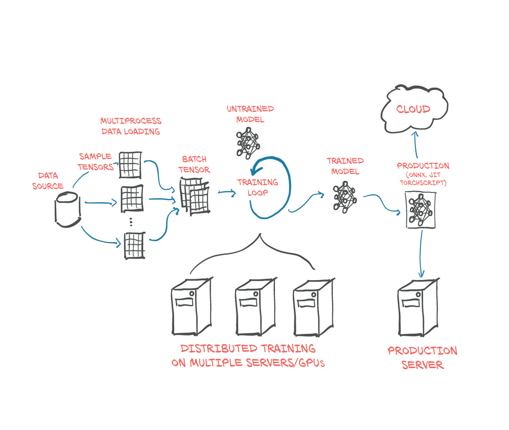
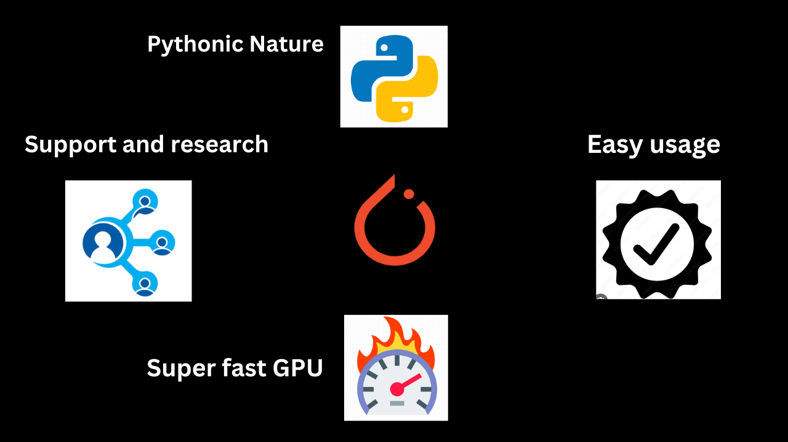
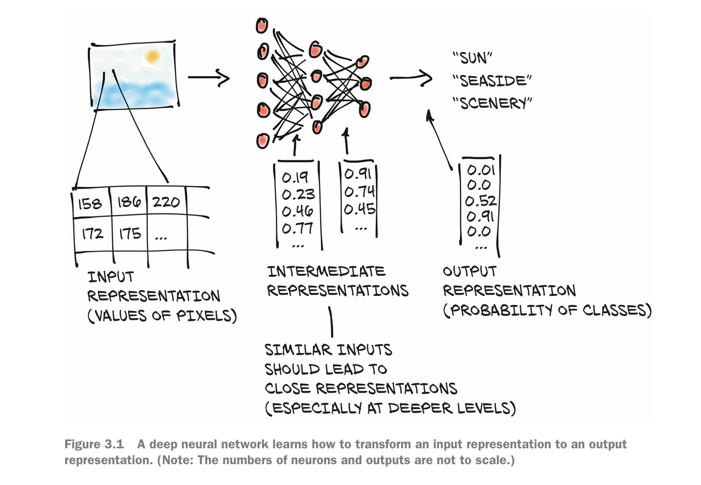
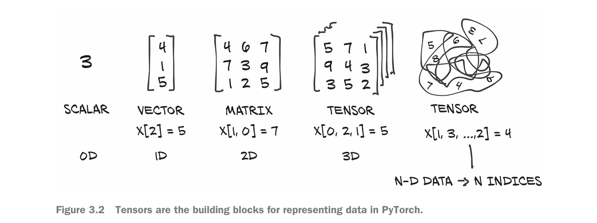
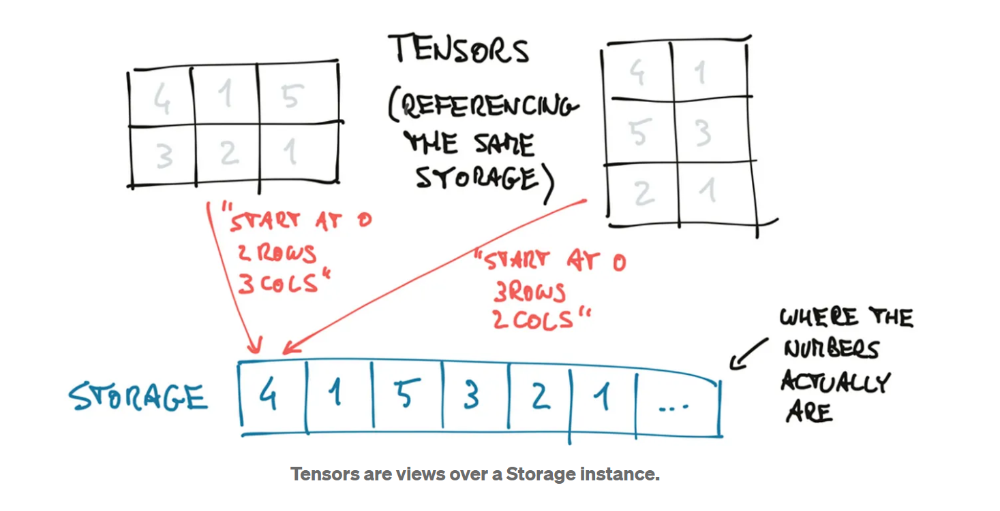
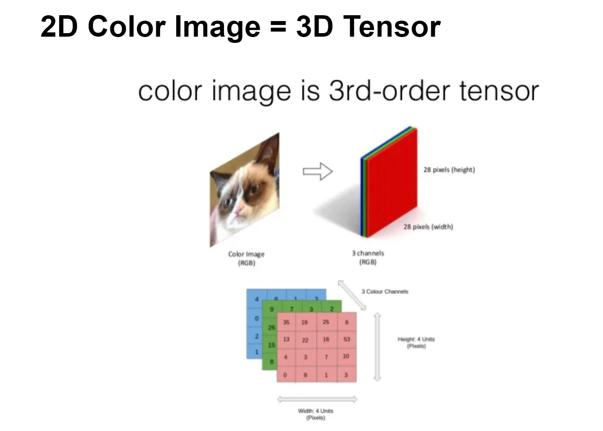
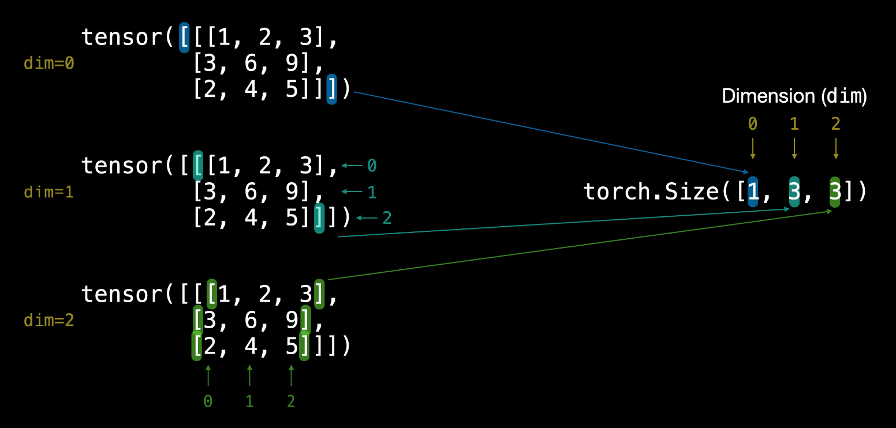
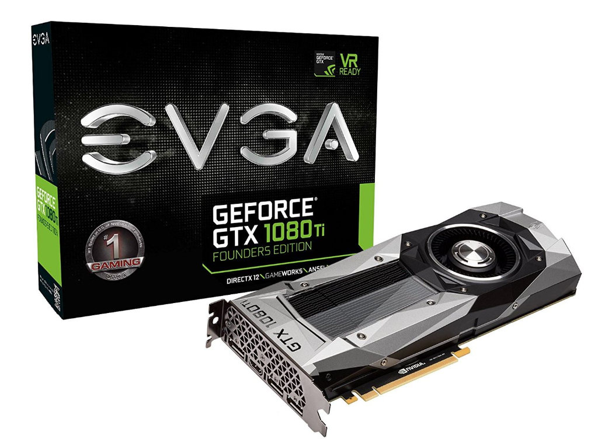
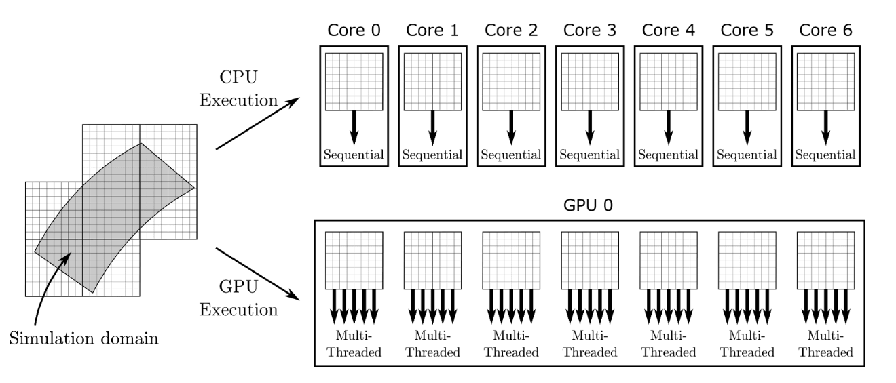

Welcome to the comprehensive guide on PyTorch, designed to take you from fundamentals to advanced applications.
Before diving into
PyTorch, let's examine
what artificial intelligence (AI) is.
AI: AI refers to the simulation of human intelligence in machines that are programmed to think like humans and mimic their actions.
Learning Objectives
Understand the basics of artificial intelligence.
Learn how to install and set up PyTorch.
Get familiar with essential concepts like Tensors and GPU acceleration.
PyTorch

PyTorch is open-source machine learning and deep learning library
developed by Facebook's AI Research lab.
PyTorch integrates with python ecosystem: It is easy to incorporate
PyTorch with existing projects build with other libraries like NumPy,
scikit-learn, and SciPy.
GPU acceleration: PyTorch allows to train the models on GPU, which is
essential for training large-scale models efficiently. It also helps
in increasing speed.
Strong support for research: Due to simplicity and dynamic nature
PyTorch is adopted widely in research community.
Ease of use and flexiblity: PyTorch's simple design and dynamic
computation graphs make it easy to use and flexible.

Where PyTorch is used?
Meta: It uses PyTorch for tasks such as image and video recognition, improving content recognition, and developing AI features.
Microsoft: It uses PyTorch for applications such as natural language understanding in its products and services, like Cortana and Office 365.
Amazon: Amazon Web Services (AWS) customers use PyTorch for building and scaling machine learning models.
Tesla and Uber: PyTorch helps Tesla to process and analyze vast amounts of data collected from its cameras continuously. And Uber uses PyTorch for motion planning and simulation in developing self-driving technology.
Setting up Environment for PyTorch
Note: Before running any of the code in this notebook, you should have gone through the PyTorch setup steps.
However, if you're running on Google Colab, everything should work (Google Colab comes with PyTorch and other libraries installed).
Tensor
Floating point numbers are the way a model deals with the information. We need a way to encode real-world data of the kind we want to process into something digestable by a model and then decode the output back to something we can understand and use for our purpose.

Tensors are specialized data structure that are very similar to arrays or matrices. The dimensionality of a tensor coincides with the number of indexes used to refer to scaler values with in the tensor. A Tensor is fundamental building block in deep learning, just as a digit in fundamental building block of mathematics.

Why Tensor?
Python lists are designed for general purpose numerical operations. They lack operations like dot product of two vectors, making them inefficient for numerical data. In short, multi-dimentional lists are inefficient. For this reason data structures like PyTorch Tensors are introduced, which provide efficient low-level implementation of numberical data structures and related operations on them. Tensors are allocated in contagoius chunks of memory managed by torch.Storage instances. This contiguity is important for performance reasons especially when performing operations.

The contiguity can be check by the function `is_contiguous()` function.
In PyTorch, we use tensors to encode the inputs and outputs of a model, as well as the model’s parameters.

torch.Size([1, 3, 3])

In contrast, tensors can represent anything in the universe. Once these tensors are embedded into the machine, we can manipulate them.
Methods in Tensor
Tensor Operations
Every type of data(image, video,text,audio,milky-way galaxy etc) in PyTorch is represented by tensors. The deep learning model gains knowledge by examining those tensors and executing numerous operations(potentially millions or more) on them constructing a depiction of the patterns within the input data.
The operations are following:
Finding min, max, sum, etc
Spectecularrr. We have covered a fair amount of tensor stories. But there is a bunch more in the torch.Tensor documentation. I would recommend spending 10-mins to scaming down the page and maybe scrabble the code.
Playing More
Indexing of Tensors
The tricky part of dealing with tensors is its indexing. It is often asked in interviews. We use it because sometimes we need to select specific data from tensors. It is similar of indexing in NumPy arrays and python lists
Interoperability with NumPy
PyTorch tensors can be converted into NumPy arrays and vice versa very efficiently. By doing so we can take advantage of the wide range of NumPy functions.
Reproducibility
The neural networks that we are going to study start with random numbers to extract deep patterns. Initially, the random numbers do not represent anything but neural networks try to improve them using tensor operations to better describe patterns in data.
In short: Neural Network training is all about initialize random numbers -> tensor operations on them -> adjust them again and again.
Although randomness works good with neural networks but sometimes you like same numbers to work with. That's where reproducibility comes into action. In other words, you can get the same (or very similar) numbers on your computer running the same code as mine.
GPU: Terminator
As we already seen that tensors are having lots of operations. In training of a neural network millions of operations on tensors are required, which is more difficult for a single CPU to carryout. That's why GPU comes into action. GPU's are best due to their ability to handle massive computational requirements(parallel processing) for training of networks.


Since Google Colab is free to use. We can use GPU for free. To check if you got access to Nvidia GPU, you can run !nvidia-smi on cmd.
Exercise
Below some practice questions. I would really encourage you to solve them before the next chapter. The solutions are given at the end of the page.